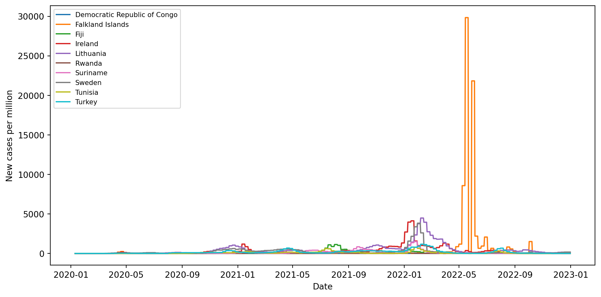
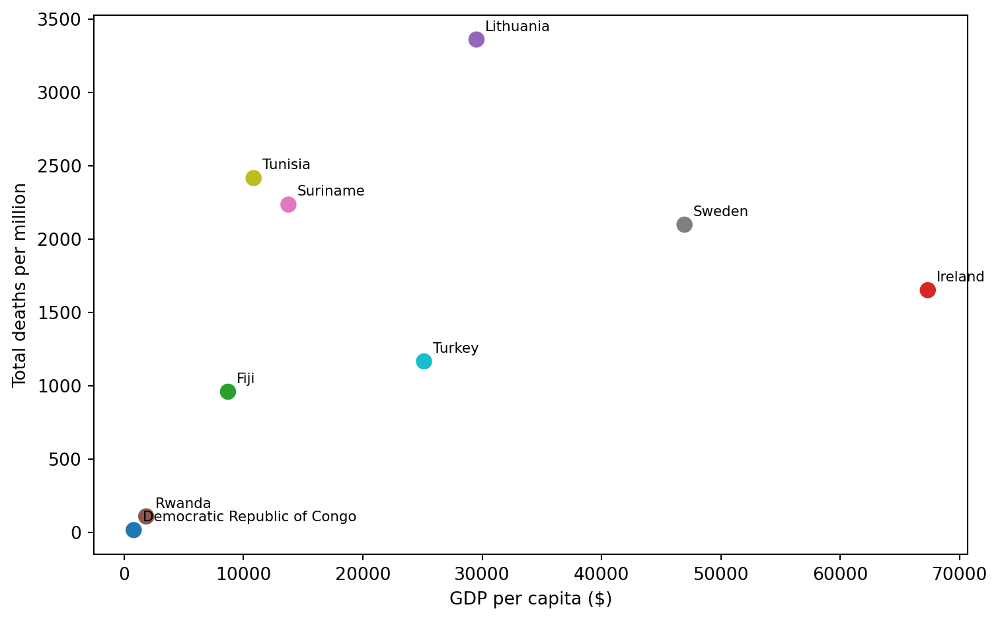
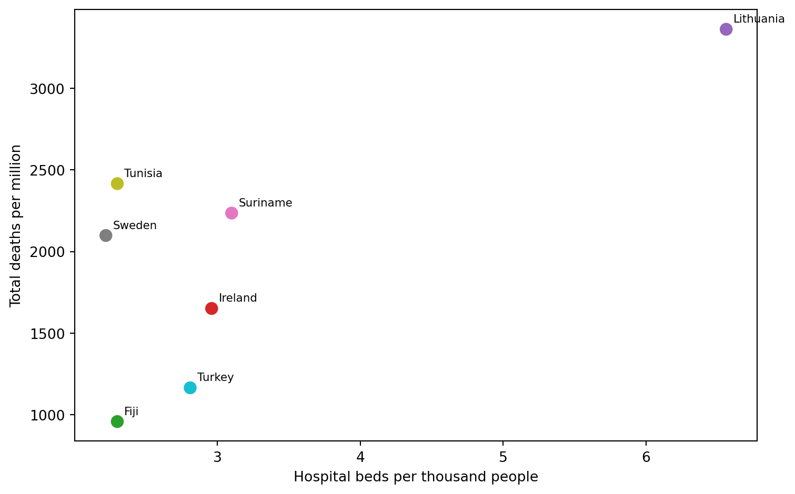
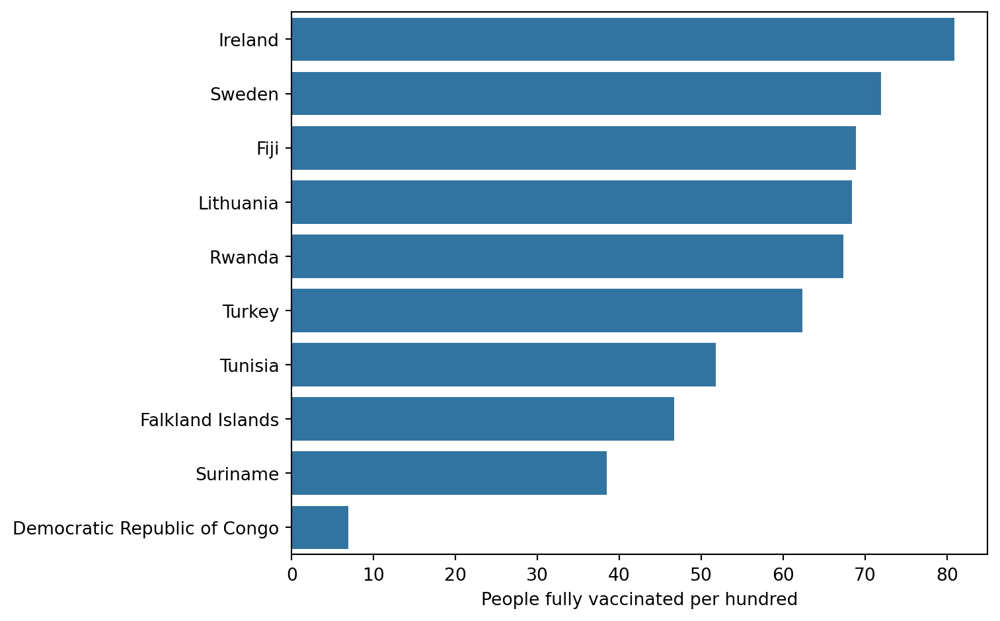

Ten Countries, One Pandemic: What Explained COVID-19 Outcomes?
Introduction
The COVID-19 pandemic hit countries in very different ways. This report compares ten countries — from wealthy nations like Sweden and Ireland to lower-income countries like Rwanda and the Democratic Republic of Congo — to ask a simple question: did wealth, health infrastructure, or vaccination speed actually determine how badly a country was hit?
Data used in this report comes from Our World in Data’s COVID-19 dataset, covering daily case, death, testing, and vaccination records alongside country-level demographic and health-system indicators for these ten countries.
The Shape of the Pandemic
Before comparing countries directly, it helps to see how cases evolved over time.
Case waves did not arrive at the same time or with the same intensity across countries. Falkland Islands shows a sharp, isolated spike in early 2022 that dwarfs every other country’s peak — a pattern typical of a very small population experiencing a single, fast-moving outbreak rather than sustained community transmission. Lithuania stands out for a large, sustained wave in late 2021, well before most of the other countries in this sample saw their own peaks. Larger, wealthier countries like Sweden and Ireland show smaller, more gradual waves spread across the full period.
Did Wealth Predict Outcomes?

There is no clear linear relationship between wealth and COVID-19 mortality. Lithuania, a mid-income country, recorded the highest death rate in the dataset — higher than far wealthier Sweden or Ireland. Meanwhile the Democratic Republic of Congo, the poorest country in the sample, shows the lowest recorded death rate, though this likely reflects limited testing and reporting capacity rather than a genuinely mild outbreak. GDP per capita alone does not explain the differences in outcomes seen here.
Did Hospital Capacity Predict Outcomes?

Hospital capacity tells a similar story to wealth. Lithuania again records the highest death rate despite having more hospital beds per thousand people than several countries with lower death rates, such as Turkey and Fiji. This suggests that raw healthcare capacity, like GDP, was not the deciding factor in how badly a country was affected — timing, health system readiness during each wave, and other factors not captured directly in this dataset likely played a larger role.
Vaccination Rollout

Vaccination rates varied widely, from over 70% in Ireland down to under 10% in the Democratic Republic of Congo. Notably, high vaccination alone did not guarantee low mortality — Sweden had one of the higher fully-vaccinated rates but still recorded a comparatively high death rate, suggesting rollout speed, timing relative to major waves, and healthcare capacity likely mattered as much as final vaccination coverage.
Conclusion
Comparing ten countries across wealth, healthcare capacity, and vaccination data shows that no single factor cleanly predicted COVID-19 outcomes. Wealthier countries were not consistently safer, greater hospital capacity did not guarantee fewer deaths, and higher vaccination rates did not guarantee lower mortality. Lithuania’s unusually high death rate despite mid-range GDP, reasonable hospital capacity, and decent vaccination coverage stands out as a reminder that pandemic outcomes were shaped by a complex mix of timing, health system readiness, and factors this dataset alone cannot fully capture — including reporting accuracy, which likely understates true impact in lower-income countries like the DRC.